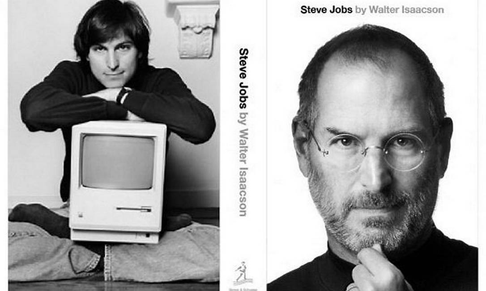

William Henry "Bill" Gates III é um magnata, empresário, diretor executivo, investidor, filantropo e autor norte-americano, que ficou conhecido por fundar, junto com Paul Allen a Microsoft, a maior e mais conhecida empresa de software do mundo em termos de valor de mercado.
Steven Paul Jobs foi um inventor, empresário e magnata norte-americano do setor da informática. Notabilizou-se como cofundador, presidente e diretor executivo da Apple Inc. e por revolucionar seis indústrias: computadores pessoais, filmes de animação, música, telefones, tablets e publicações digitais.

Linus Benedict Torvalds é um engenheiro de software, nascido na Finlândia e naturalizado estado-unidense em 2010, criador, e por muito tempo o desenvolvedor mais importante do núcleo Linux, sendo utilizado em importantes sistemas Linux, Android e Chrome OS.